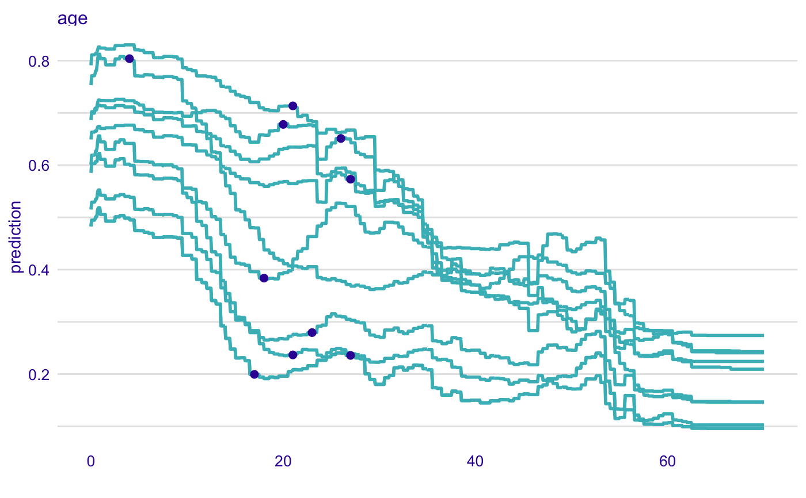

Adds a Layer with Residuals to a Profile Plot
Function 'show_residuals' adds a layer to a plot created with 'plot.ceteris_paribus_explainer' for selected observations. Note that the 'y' argument has to be specified in the `ceteris_paribus()` function.
show_residuals(x, ..., size = 0.75, alpha = 1, color = c(`TRUE` = "#371ea3", `FALSE` = "#f05a71"), variables = NULL)
Arguments
| x | a ceteris paribus explainer produced with function `ceteris_paribus()`. Note that `y` parameter shall be supplied in this function. |
|---|---|
| ... | other explainers that shall be plotted together |
| size | a numeric. Size of lines to be plotted |
| alpha | a numeric between 0 and 1. Opacity of lines |
| color | a character. Either name of a color or name of a variable that should be used for coloring |
| variables | if not NULL then only `variables` will be presented |
Value
a ggplot2 layer
Examples
library("DALEX")library("randomForest") library("ingredients") library("ggplot2") titanic <- na.omit(titanic) model_titanic_rf <- randomForest(survived == "yes" ~ gender + age + class + embarked + fare + sibsp + parch, data = titanic, ntree = 500)#> Warning: The response has five or fewer unique values. Are you sure you want to do regression?explain_titanic_rf <- explain(model_titanic_rf, data = titanic[,-9], y = titanic$survived == "yes", label = "Random Forest v7") johny_d <- data.frame( class = factor("1st", levels = c("1st", "2nd", "3rd", "deck crew", "engineering crew", "restaurant staff", "victualling crew")), gender = factor("male", levels = c("female", "male")), age = 8, sibsp = 0, parch = 0, fare = 72, embarked = factor("Southampton", levels = c("Belfast", "Cherbourg", "Queenstown", "Southampton")) ) johny_neighbours <- select_neighbours(data = titanic, observation = johny_d, variables = c("age", "gender", "class", "fare", "sibsp", "parch"), n = 10) cp_neighbours <- ceteris_paribus(explain_titanic_rf, johny_neighbours, y = johny_neighbours$survived == "yes", variable_splits = list(age = seq(0,70, length.out = 1000))) plot(cp_neighbours, variables = "age",) + show_observations(cp_neighbours, variables = "age")#> Error in plot.ceteris_paribus_explainer(cp_neighbours, variables = "age", ): argument is missing, with no defaultcp_johny <- ceteris_paribus(explain_titanic_rf, johny_d, variable_splits = list(age = seq(0,70, length.out = 1000))) plot(cp_johny, variables = "age", size = 1.5, color = "#8bdcbe") + show_profiles(cp_neighbours, variables = "age", color = "#ceced9") + show_observations(cp_johny, variables = "age", size = 5, color = "#371ea3") + show_residuals(cp_neighbours, variables = "age")